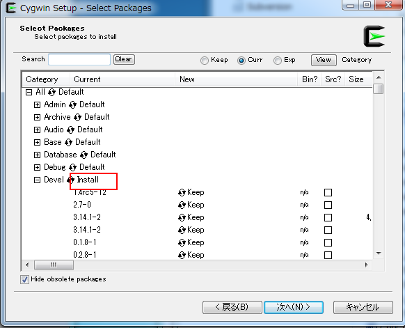
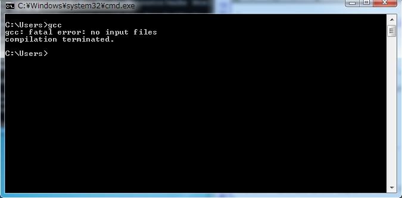

環境構築方法¶
cygwinインストール¶
本ウィンドウシステムでは、スクリプトをコンパイルしてウィンドウデータとします。 スクリプトをコンパイルするときに、プリプロセッサとしてgccを使用しています。
MS-Windows環境では、以下の手順でcygwinをインストールしてください。
cygwinをダウンロード¶
次のアドレスから setup-x86.exe 若しくは setup-x86_64.exe をダウンロードしてください。
Devel パッケージを選択しインストール¶
Select Packagesの項目で図のように、Develを Default → Install に変更してください。

インストール¶
後は指定通りインストールしてください。
パスを通す¶
インストールしたフォルダを基準に、binにパスを通してください。
デフォルトでは、下記のフォルダになっています。
- C:/cygwin/bin (64bit版なら、c:/cygwin64/bin)
確認¶
コマンドプロンプトを開いて、gccと打ち込んでみてください。 正しくインストールできていれば、以下のように表示されるはずです。

Python 2.x インストール¶
多言語対応のための文字リソースを作るときに、MS-Excelを使います。 MS-Excelから、データコンバートするためのツールは、Pythonで記述されています。
読み込むためのライブラリは、 openpyxl を使用しています。 各自インストールしてください。
本環境は、Python 2.6以降で動作確認をとっています。